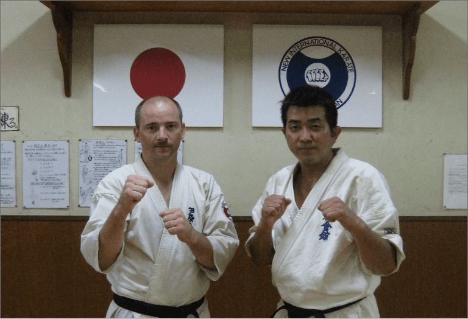
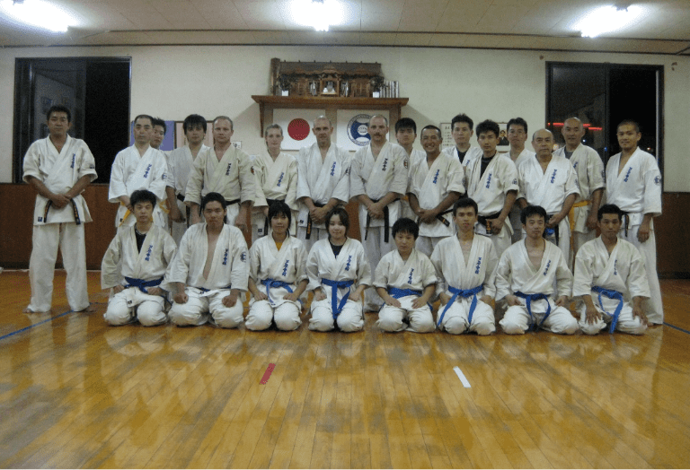

.svg)
.svg)
Ashihara er en særlig gren af karate, hvor fokus ligger på at opnå fysisk kontrol over modstanderen ved hjælp af forskellige teknikker. Ashihara karaten ledes af en Kancho, der betyder mesterlærer, eller øverste leder af en skole.
Formel organisering:
Kancho Hidenori, Ashihara i Japan er øverste leder af Ashihara-karaten og den internationale organisation, New International Karate Organization (N.I.K.O), som er denne form for karates formelle organ.
Det er N.I.K.O og Kancho, der godkender nye skoler (branches) og fastlægger den etikette og de regler, der gælder for denne form for karate, både ved træning og i konkurrence.
Ashihara-karaten har et ret præcist regelsæt, og en formel organisering, der både sikrer, at karateudøvelsen sker i overensstemmelse med Ashiharas værdier og kodeks, og håndterer den praktiske organisering og udøvelse af sporten på et professionelt niveau.
Det er Kancho, som formelt godkender graduering, dvs. opnåelse af de forskellige gradstegn. Men ansvaret for gradueringen op til 3. Dan er uddelegeret til de Branch chiefs, der leder Ashihara-skolerne rundt om i verden.

Ånd, traditioner og etiketter
Karate-etiketten er næsten den samme for alle Ashihara skoler i verden. Der er derfor ingen, der behøver at være i tvivl om, hvordan man skal opføre sig i en "fremmed" dojo.
1. Alle karateudøvere hilser på hinanden med "osu", også uden for træningssalen. Ordet "Osu" er en international karatehilsen, der udtales højt og tydeligt. Reglen er, at laveste grad hilser først. Når der hilses på en sortbælte skal "osu" ledsages af sempai eller sensei.
2. Sortbælte 1. -2. dan tiltales med sempai. Branch-chiefs og sortbælter med 3. dan og opefter tiltales med sensei.
3. Man optræder altid respektfuldt overfor højere-graduerede.
4. Alle karate-kaer skal i deres optræden virke som gode eksempler for de lavere- graduerede.
5. Kun klubbens godkendte mærker er tilladt og krævet på gien. Alle andre mærker skal fjernes fra bælte og gi.
6. Før man træder ind i dojoen, skal gien sidde korrekt og bæltet være bundet. Aftagning af gi og bælte efter træning må først ske, når man er kommet ud af dojoen.
7. Negle skal altid være kortklippede og rene, og for øvrigt skal eleven altid fremtræde soigneret.
8. Ure og smykker af enhver art må ikke bæres under træningen.
9. Der må ikke spises eller medtages glas-genstande i dojoen.
10. Ved indtræden i dojoen standser man op og bukker reglementeret. Det samme gælder, når man forlader dojoen. Alle karatebuk ledsages af ordet "osu".
11. Når instruktøren starter træningen, går eleverne hurtigt ind på række, højeste grad begynder fra højre. Alle stiller sig i "fudo dachi" (klar-stilling)
12. Kommer man for sent, skal man først sikre sig, at der ikke mediteres i dojoen. I så fald skal man vente med at gå ind til meditationen er færdig. Man bukker ved indgangen og sætter sig med ryggen mod shinden i seiza-stilling med lukkede øjne og afventer instruktørens tilkendegivelse, hvorefter man rejser sig og bukker for instruktøren ledsaget af "osu onegai shimasu". Derefter går man ned i bagerste række og deltager i træningen.
13. Når der rettes på bælte eller gi, vendes ryggen til shinden.
14. Når instruktørens forklaring er forstået, svares med et "osu" uden man er opfordret hertil. Dette gælder såvel den enkelte elev som hele holdet.
15. Under træningen er al tale, fløjten o.l forbudt.
16. Ingen må forlade dojoen under træningen uden først at have indhentet instruktørens tilladelse.
17. Overværer man andres træning, skal man også selv være koncentreret og seriøs.
18. Under et holds meditation skal alle andre i dojoen forholde sig fuldstændigt roligt.
Historien
I Ashihara Karate-systemet, som er udviklet af, nu afdøde, Kancho Hideyuki Ashihara 10. Dan er moderne idrætsteori og -mekanik integreret med de bedste teknikker fra bl.a. den traditionelle karate, kendo og aikido, resulterende i at teknikkerne bliver hurtige og kraftfulde, hvilket er meget vigtigt i en kampsituation - ikke mindst i selvforsvar.
Grundidéerne i dette system er sikkerhed og kontrol; Et sikkert forsvar baseret på cirkulære undvigelser til siderne fremfor konfrontation med modstanderens kraft udgør grundlaget for at kontrollere modstanderen og, om nødvendigt, at indsætte en afgørende teknik.
Kancho Ashihara mente ikke at de traditionelle kampsystemer, som han allerede var mester i, var effektive nok og viede derfor sit liv til udviklingen af Ashihara Karate, som sætter én i stand til at besejre en fysisk overlegen modstander igennem brugen af "Sabaki" ; som bedst kan oversættes: kamp-kontrol af modstanderen Ikke mindst på grund af sin enestående effektivitet er Ashihara Karate blandt andet brugt til undervisning af politifolk i Japan. Kancho Hideyuki Ashihara (1944-95) opnåede at blive en levende legende, han åbnede sin første dojo (træningslokale) I en alder af kun 20 år, men vedblev helt indtil sin død at udvikle sit eget logiske system til fuldkommenhed.
I 1980 grundlagde Ashihara Kancho New International Karate Organisation, Ashihara Kaikan med hovedskole i Matsuyama på øen Shikoku. og lod dermed Ashihara Karaten udbrede sig og I løbet af kort tid blive det populæreste karatesystem I Japan.
Idag findes der Ashihara karate skoler overalt i verden (alene i Danmark omkring 20 klubber). Intet andet karatesystem har på så kort tid opnået en tilsvarende udbredelse og popularitet. På trods af den enorme udbredelse er hver enkelt klub ud over hele verden direkte tilknyttet hovedskolen I Japan.
I Ashihara Karate lægges der vægt på en god træningsindsats og en respektfuld indstilling til karate. Gennem karatetræningen lærer man hele tiden at udfordre sig selv og sætte sig nye mål for at blive bedre. Målsætninger for Ashihara Karate Ashihara Klubberne i Danmark er i dag organiseret i D.A.O. Dansk Ashihara Organisation
Ashiharas Karate målsætninger:
- At forbedre form og balance
- At øge hastighed/hurtighed
- At øge sin styrke
- At lære mere og mere avancerede teknikker